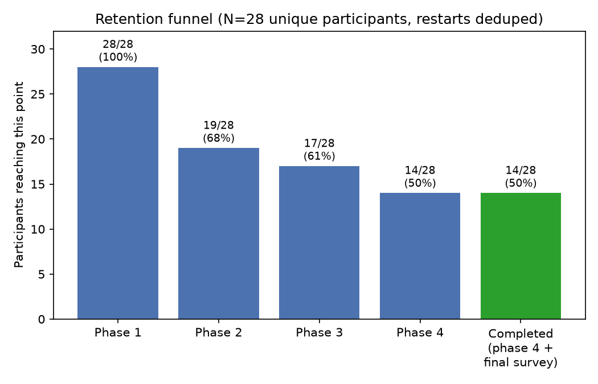
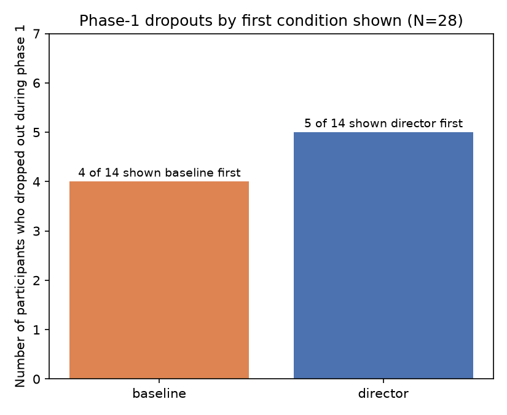
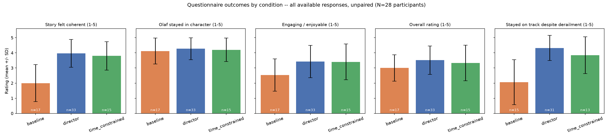
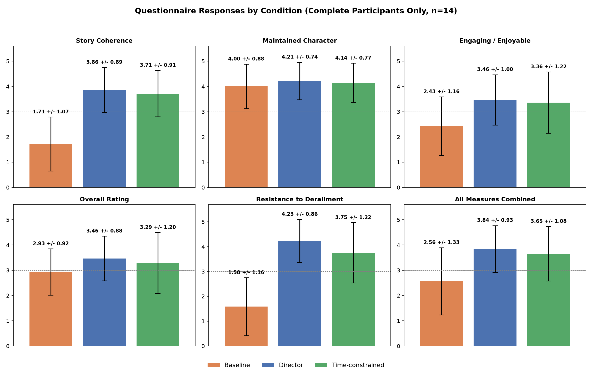
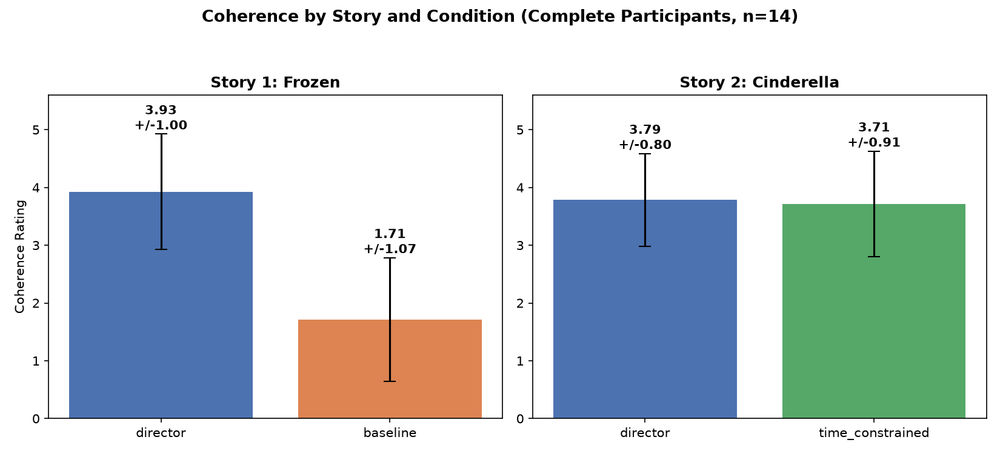
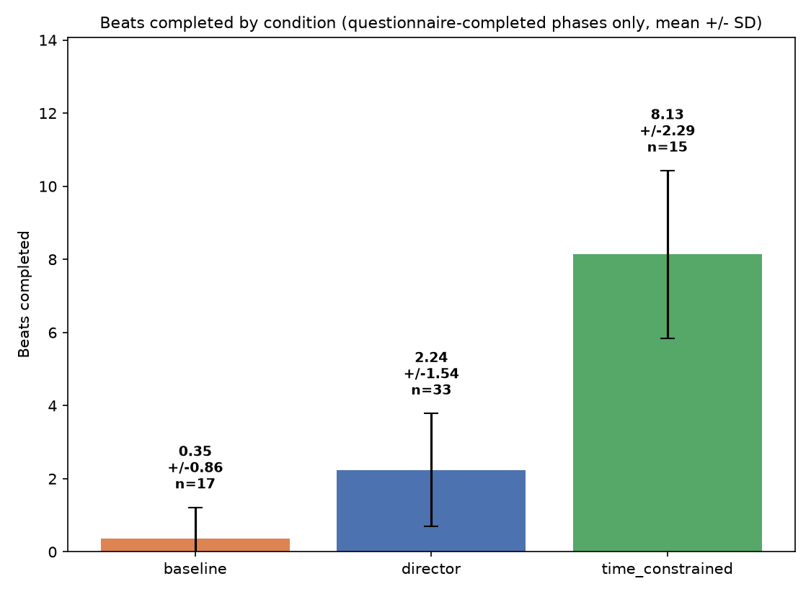
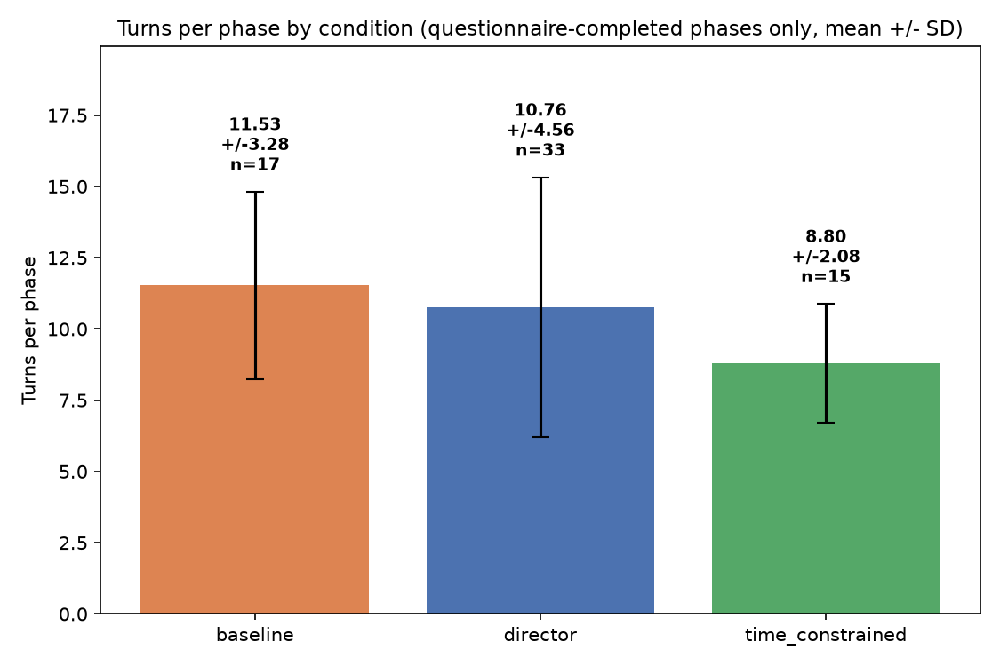

N = 28 unique participants, of whom 14 completed all 4 phases and submitted a final questionnaire (50%).

| n | % | |
|---|---|---|
| Reached phase 1 | 28 | 100% |
| Reached phase 2 | 19 | 68% |
| Reached phase 3 | 17 | 61% |
| Reached phase 4 | 14 | 50% |
| Completed (phase 4 + final questionnaire) | 14 | 50% |
Everyone who reached phase 4 also submitted the phase-4 questionnaire — i.e. "reached phase 4" and "completed" are the same 14 people.
Dropout stage breakdown:
| Stage | n |
|---|---|
| Completed | 14 |
| Phase 1, mid-story | 9 |
| Phase 2, mid-story | 2 |
| Phase 3, after story finished, before questionnaire | 1 |
| Phase 3, mid-story | 1 |
| Phase 4, zero engagement (disconnected right as it started) | 1 |

Baseline-first dropout: 4/14 (29%); director-first dropout: 5/14 (36%). Fisher's exact p=1.00 — no detectable condition effect on early abandonment; early dropout looks like a participant trait, not a reaction to which condition came first.

| Measure | baseline | director | time_constrained | Kruskal-Wallis |
|---|---|---|---|---|
| Coherence (Q1) | 2.00±1.22 (n=17) | 3.97±0.92 (n=33) | 3.80±0.94 (n=15) | H=21.89, p<0.001 |
| In character (Q2) | 4.12±0.86 (n=17) | 4.27±0.72 (n=33) | 4.20±0.77 (n=15) | H=0.34, p=0.84 |
| Engagement (Q4) | 2.53±1.07 (n=17) | 3.42±1.06 (n=33) | 3.40±1.18 (n=15) | H=7.46, p=0.024 |
| Overall (Q5) | 3.00±0.87 (n=17) | 3.52±0.94 (n=33) | 3.33±1.18 (n=15) | H=2.67, p=0.26 |
| Resisted derailment (Q6) | 2.07±1.49 (n=15) | 4.32±0.83 (n=31) | 3.85±1.21 (n=13) | H=18.72, p<0.001 |
(Unpaired — double-counts participants who answered more than one questionnaire. Use the paired comparisons below for the statistically correct within-subject test.)
Each completer sees director twice (once per story) and baseline /
time_constrained once each, so director has 28 responses here against 14
for the other two. This is the descriptive table behind plot 05 below —
every number in the plot has its source value listed here.

| Measure | Question wording | baseline (n=14) | director (n=28) | time_constrained (n=14) |
|---|---|---|---|---|
| Coherence (Q1) | "The story felt coherent and followed a clear narrative arc." | 1.71 ± 1.07 | 3.86 ± 0.89 | 3.71 ± 0.91 |
| Maintained character (Q2) | "Olaf stayed in character throughout the conversation." | 4.00 ± 0.88 | 4.21 ± 0.74 | 4.14 ± 0.77 |
| Engaging / enjoyable (Q4) | "The story felt engaging and enjoyable to participate in." | 2.43 ± 1.16 | 3.46 ± 1.00 | 3.36 ± 1.22 |
| Overall rating (Q5) | "Overall, how would you rate the experience?" | 2.93 ± 0.92 | 3.46 ± 0.88 | 3.29 ± 1.20 |
| Resisted derailment (Q6) | "How well did Olaf stay on track?" (1=got derailed, 5=stayed on track) | 1.58 ± 1.16 (n=12) | 4.23 ± 0.86 (n=26) | 3.75 ± 1.22 (n=12) |
| All measures combined | — | 2.56 ± 1.33 | 3.84 ± 0.93 | 3.65 ± 1.08 |
This pooled view is good for eyeballing the overall gap between conditions, but it mixes each participant's story-1 and story-2 director rating together, and director is never compared against both other conditions on equal footing (baseline only appears in story 1, time_constrained only in story 2). The paired, story-separated comparison below is the one to cite for statistical claims.

Story 1 — director vs. baseline (Frozen, 5 beats total), Wilcoxon signed-rank:
| Measure | director | baseline | n pairs | p |
|---|---|---|---|---|
| Coherence | 3.93 ± 1.00 | 1.71 ± 1.07 | 14 | 0.001 |
| In character | 4.29 | 4.00 | 14 | 0.40 |
| Engagement | 3.64 | 2.43 | 14 | 0.036 |
| Overall | 3.57 | 2.93 | 14 | 0.12 |
| Resisted derailment | 4.36 ± 0.90 | 1.55 | 11 | 0.002 |
Story 2 — director vs. time-constrained (Cinderella, 9 beats total, 5 min), Wilcoxon signed-rank:
| Measure | director | time_constrained | n pairs | p |
|---|---|---|---|---|
| Coherence | 3.79 | 3.71 | 14 | 0.76 |
| In character | 4.14 | 4.14 | 14 | 0.93 |
| Engagement | 3.29 | 3.36 | 14 | 0.93 |
| Overall | 3.36 | 3.29 | 14 | 0.67 |
| Resisted derailment | 4.25 | 3.75 | 12 | 0.40 |
Coherence and resistance numbers here are the story-1-only slice of the pooled director row above (3.93/4.36 vs the pooled 3.86/4.23) — both are correct, they're just answering different questions ("director in general" vs. "director specifically against baseline").
This is a paired, non-parametric test — the right tool here because (a) every participant rated both conditions, so the natural comparison is each person's own director-minus-baseline difference, not two independent groups, and (b) Likert ratings (1–5) are ordinal, not interval-scaled, so a paired t-test's normality/equal-interval assumptions don't hold.
Mechanically: for each of the 14 participants, it takes (director rating − baseline rating), ranks those differences by absolute size, and asks whether the signed ranks are skewed toward one direction more than chance would produce. A pair where the two ratings are equal contributes nothing and is dropped — that's why n drops from 14 to 11 for "resisted derailment" (three participants left that field blank in one of the two conditions, not because they rated it a tie).
Takeaway: director mode is significantly and consistently better than baseline on coherence and derailment-resistance (and, more weakly, on engagement); character consistency is high and statistically indistinguishable across all three conditions; imposing a 5-minute time limit on the director doesn't measurably hurt any measure (all p > 0.39).
Restricted to phases the participant actually finished and submitted a questionnaire for (excludes phases abandoned mid-story, so this is a different, stricter slice than §2's "all available responses" table).
| Metric | baseline | director | time_constrained |
|---|---|---|---|
| Beats completed (mean ± SD, n) | 0.35 ± 0.86 (n=17) | 2.24 ± 1.54 (n=33) | 8.13 ± 2.29 (n=15) |
| Turns per phase (mean ± SD, n) | 11.53 ± 3.28 (n=17) | 10.76 ± 4.56 (n=33) | 8.80 ± 2.08 (n=15) |
(time_constrained's n=15 isn't a typo for the 14 study-completers: it's
those 14, each contributing one time_constrained response, plus
z7-S4ed7 — who fully completed phases 1–3, including a submitted
time_constrained questionnaire in phase 3, but then never engaged with
phase 4 at all, so they don't count as a study "completer" even though
this particular phase response of theirs is real and complete.)


How the director beats-completed numbers were derived. beats_completed
is a self-report from the director LLM (should_complete_beat in its JSON
output each turn) with no code-level override, and it turns out to
dramatically under-report: it sat at 0 for the large majority of director
phases even when the transcript's actual narration had clearly walked
through several beats' worth of plot (see the worked example below). To get
a real number, every one of the 39 director-condition phases in
outputs_all was manually read against its scenario's beat list (5 beats
for Frozen, 9 for Cinderella — defined in
Implementation/scenarios/olaf_derailment_scenario_suite.py) and
beats_completed/completed_beats were corrected directly in the source
JSON files to reflect which beats' core events the narration actually
depicted, in order. baseline's numbers are not recoded — they're still
the original, equally-unreliable auto-logged values — because the task
scope was director-only; treat baseline's 0.35 as an instrumentation
artifact, not evidence of low progress.
Worked example: outputs_all/phase_4/session_20260723_082157_HgvNXiBO.json,
phase 4 (director, Cinderella) — 28 turns, ending in a submitted
questionnaire — was logged as beats_completed: 0. Reading the transcript:
turn 4 covers the stepsisters' chore list (beat 2), turn 8 the invitation
arriving (beat 3), turn 12 the fairy godmother appearing (beat 4), turns
15–16 the transformation and midnight warning (beat 5), turns 17–19 the
ball and meeting the prince (beat 6), turn 20 the midnight flight and lost
slipper (beat 7), turns 21–27 the kingdom-wide slipper search (beat 8), and
turn 28 the slipper fitting Cinderella (beat 9) — every single beat, back
to back, narrated correctly. Corrected value: beats_completed: 9
(maximum possible). This is the most extreme case, but the direction (auto-log
under-counts, sometimes severely) held throughout: of the 33
questionnaire-completed director phases, 19 needed correction, all upward,
several from 0 or 1 to 2–4 (one to 9).
Turns-per-phase never had this problem and remains the safer unadjusted
proxy for conversation length across all three conditions — by that
measure, all three produce comparably long conversations (~9–12 turns on
average among completed phases), with baseline slightly ahead of director
and director showing the highest spread (SD 4.56 vs baseline's 3.28). With
the director beats-completed numbers now corrected, director still trails
time_constrained by a wide margin (2.24 vs 8.13 of 9 beats) — but that gap
is expected and not a quality signal: time_constrained is explicitly
force-advanced toward the story's end as its 5-minute budget runs out
(server.py's critical/final pacing modes), while unconstrained
director rounds are cut off by a fixed 5-minute timer or a manual "Finish
Story" click with no such forcing, so a shorter fraction of the (longer,
less rushed) story typically gets covered before time runs out.
Participant-level abandonment breakdown (28 participants total):
| Group | n | Detail |
|---|---|---|
| Phase 1 abandoners | 9 | 4 shown baseline first (avg 4.25 turns before quitting), 5 shown director first (avg 1.6 turns) |
| Phase 2 abandoners | 2 | Both director→baseline; high phase-1 director engagement (15 turns each) and ratings (Q1=4, Q6=4.5 avg), then quit mid-baseline without submitting that questionnaire |
| Phase 3 abandoners | 2 | Both baseline→director in story 1; one (xwamG5L9) quit mid-story-2-director after a strong phase-1→phase-2 improvement, the other (TxUvTJNR, on their restarted attempt) finished story 2's time-constrained phase but never submitted that questionnaire |
| Phase 4, zero engagement | 1 | z7-S4ed7 fully completed phases 1–3 with all three questionnaires submitted (including a perfect-5s time-constrained phase 3), then never engaged with phase 4 at all — the cleanest example of late-study fatigue in the dataset |
| Completed | 14 | — |
First-condition dropout rate: baseline-first 4/14 (28.6%), director-first 5/14 (35.7%). No meaningful condition effect on early abandonment.
Baseline-first abandoners engaged noticeably longer before quitting (avg 4.25 turns) than director-first abandoners (avg 1.6 turns) — director's early narrative structure appears to hold attention better in the first few turns even among people who ultimately leave the study.
build_dataset.py — builds phases.csv / participants.csv from
../outputs_all/phase_*/*.json, deduplicating participant restarts
(keeps the latest attempt).run_stats.py — all statistical tests above; writes stats_report.txt.make_plots.py — writes plots/01–08 (retention, dropout-by-condition,
all-responses-by-condition, turns-by-condition boxplot, completers-all-measures,
story comparison, beats-completed-by-condition, turns-mean-SD-by-condition).outputs_all/: run
build_dataset.py, then run_stats.py, then make_plots.py, in that
order, with a Python environment that has pandas/numpy/scipy/matplotlib
(e.g. /home/prachakonda/Disney/.venv).Provenance note on outputs_all/: beats_completed / completed_beats
for all 39 director-condition phases were manually recoded in place (see §3)
by reading each transcript against its scenario's beat list and correcting
the auto-logged (self-reported, unreliable) values directly in the source
JSON files — this is a real edit to the raw study data, not a
derived/separate field. A full pre-edit backup of outputs_all/ was taken
first, at ../outputs_all_backup_pre_beat_recode_<timestamp>/, so the
original auto-logged values are recoverable if needed. baseline-condition
phases were left untouched (out of scope for that pass) and remain equally
unreliable — see §3's caveat before citing baseline beats_completed.